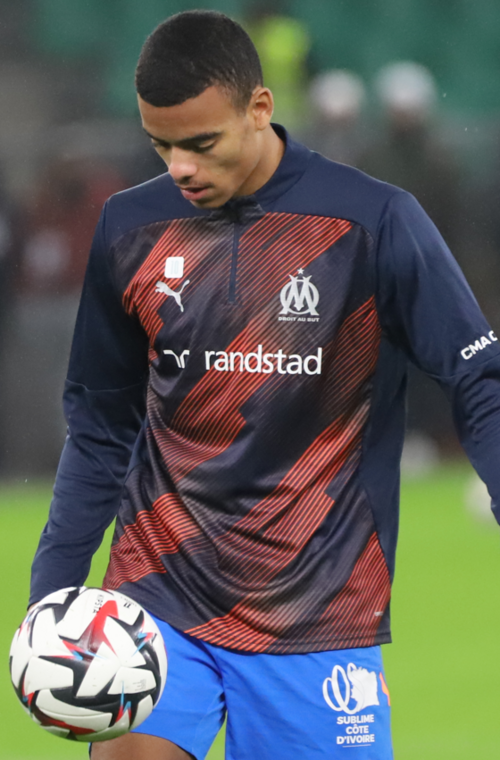
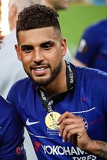
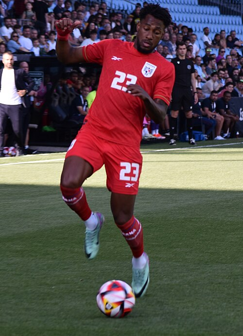
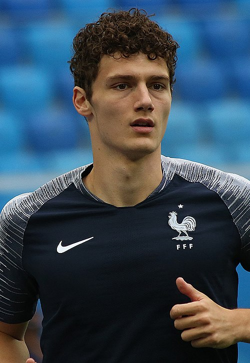
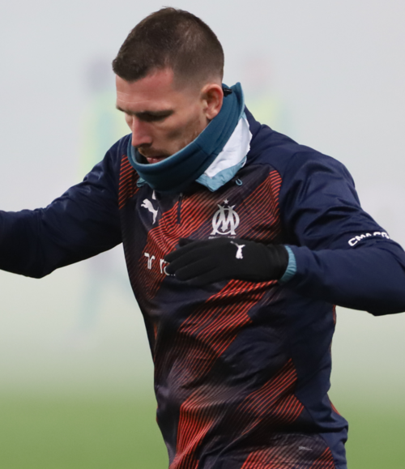
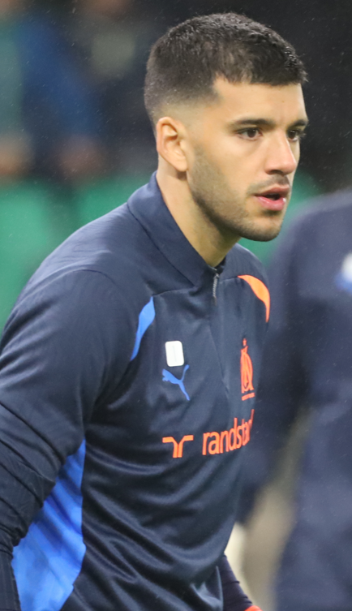

Olympique de Marseille Portfolio
Current roster, squad value, top assets, U23 assets, and market risk.
Squad Market Score82.5
Squad ARES Score84.9
Average Age29.3
Transfer RiskMedium
Olympique de Marseille
Ligue 1 | France | Europe
Top AssetIliman Ndiaye
U23 Assets1
Need AreaRole security and U23 depth
ConfidenceHigh
Market Score vs Age
Squad portfolio shape by age and market score.
ARESMarketTrendConfidence
Position Strength
GK, CB, FB, CM, W, CF portfolio balance.
ARESMarketTrendConfidence
Current Player Roster
| Player | Age | Position | Minutes / Role | ARES | Market | Tier | Trend | Confidence |
|---|---|---|---|---|---|---|---|---|
| Iliman Ndiaye | 26 | MF | 3004 estimated minutes / Projected starter | 89.6 | 89.5 | Franchise Asset | Flat | High |
 Mason Greenwood | 24 | FW | 2664 estimated minutes / Projected starter | 87.2 | 88.8 | Franchise Asset | Rising | High |
 Emerson Palmieri | 31 | DF | 1440 estimated minutes / Rotation / role player | 89.3 | 86.3 | Blue-Chip Asset | Falling | High |
 Michael Amir Murillo | 30 | DF | 808 estimated minutes / Rotation / role player | 86.5 | 83.2 | Blue-Chip Asset | Rising | High |
 Benjamin Pavard | 30 | DF | 2080 estimated minutes / Projected starter | 85.8 | 82.4 | Blue-Chip Asset | Flat | High |
| Ismaël Koné | 23 | MF | 1770 estimated minutes / Rotation / role player | 83.5 | 82.3 | Blue-Chip Asset | Rising | High |
 Pierre-Emile Højbjerg | 30 | MF | 932 estimated minutes / Rotation / role player | 82.3 | 79.7 | Rising Asset | Rising | High |
| Pierre-Emerick Aubameyang | 36 | FW | 2194 estimated minutes / Projected starter | 81.2 | 77.4 | Rising Asset | Flat | High |
 Gerónimo Rulli | 34 | GK | 1911 estimated minutes / Projected starter | 78.9 | 72.8 | Core Starter | Rising | High |
U23 Assets
| Player | Age | Position | Market | Reason |
|---|---|---|---|---|
| Ismaël Koné | 23 | MF | 82.3 | Upside MF profile with Ligue 1 context, 1770 beta-estimated minutes, and licensed Commons photo coverage. |